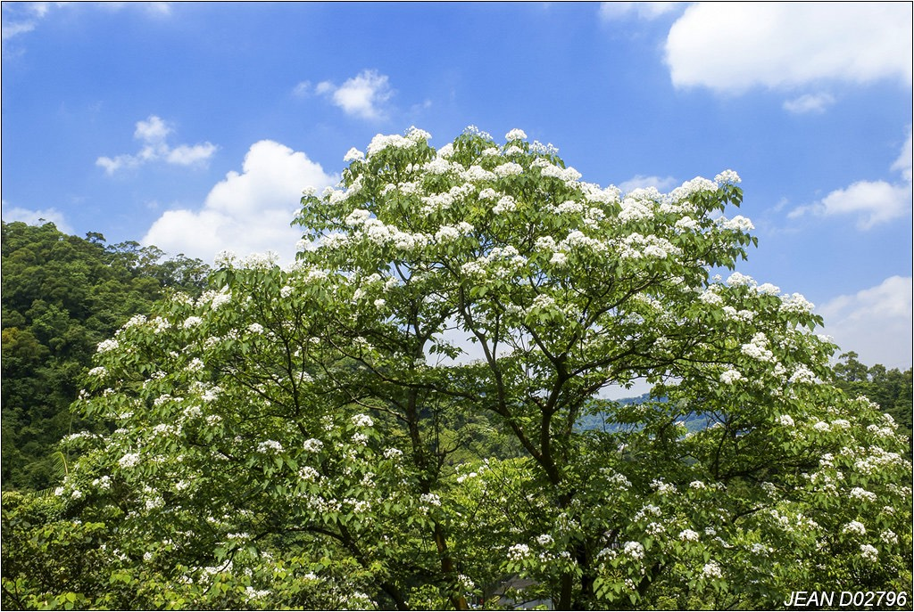
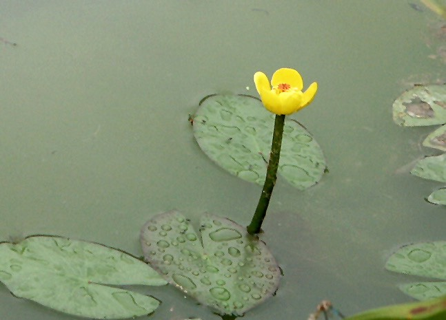
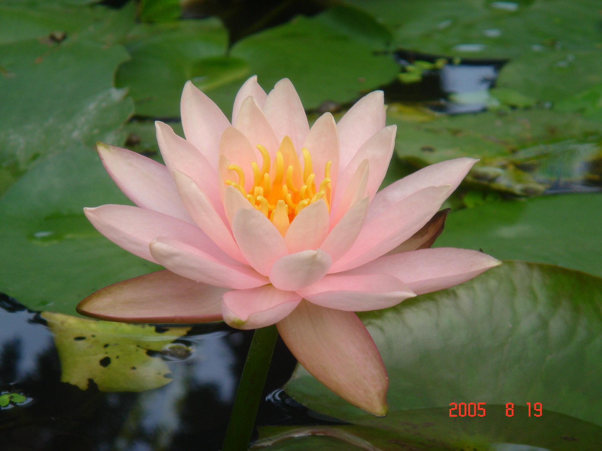
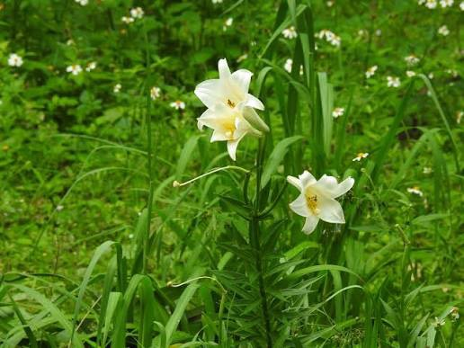
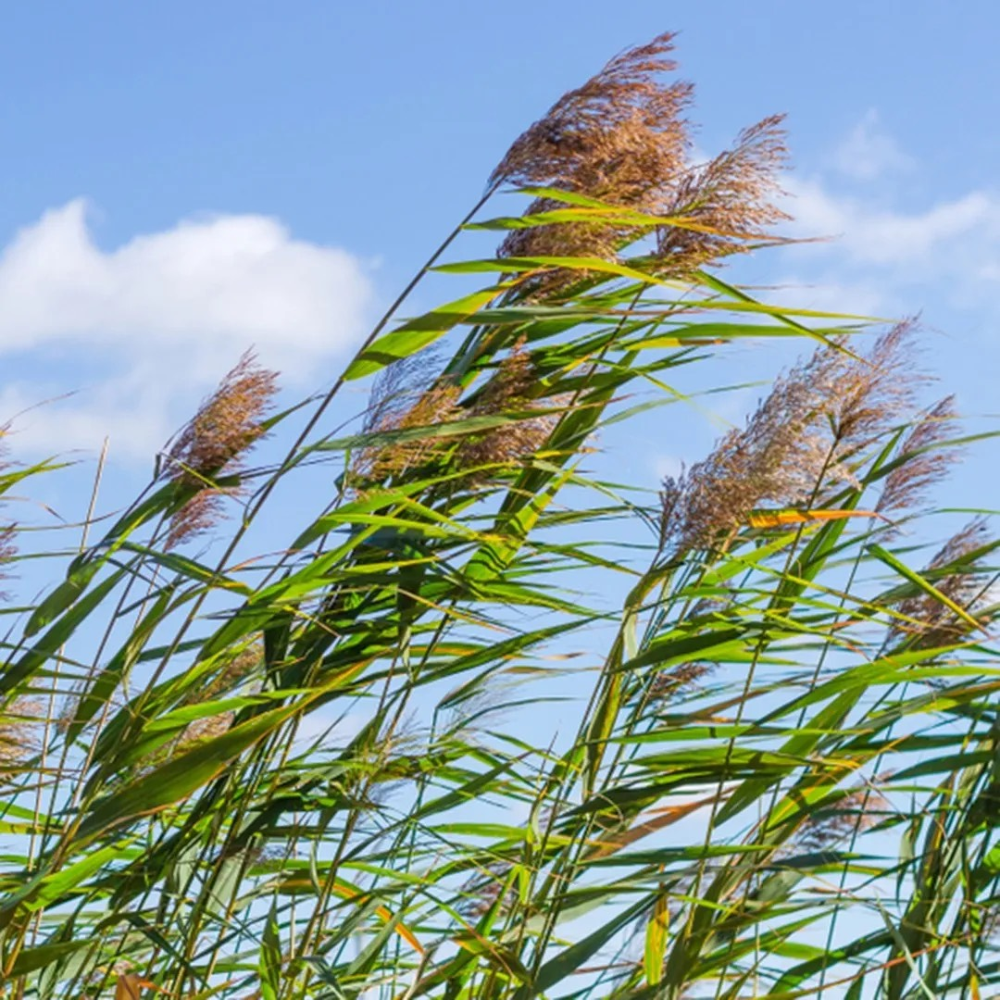
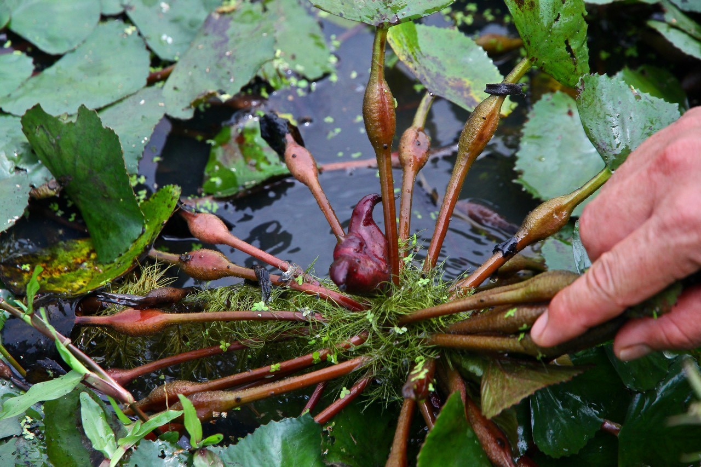

甘家堡埤塘常見植物
甘家堡埤塘周圍具有豐富的濕地與陸域植物， 這些植物不僅提供生物棲息環境，也維持埤塘生態平衡。

油桐樹 Tung Tree
油桐樹是臺灣常見的落葉喬木，每年春末會開出白色桐花， 形成如雪覆蓋般的景觀。雖然不是水生植物， 但常見於埤塘周邊綠地，增添季節特色。
了解更多
臺灣萍蓬草 Taiwan Yellow Water Lily
臺灣萍蓬草是臺灣原生的水生植物， 具有圓形浮葉與黃色花朵，生長於埤塘等靜水環境， 具有重要的生態與保育價值。
了解更多
黃花風鈴木 Golden Trumpet Tree
黃花風鈴木盛開時會綻放鮮黃色花朵， 形成亮眼的季節景觀。常出現在埤塘周邊步道與休憩空間， 提升自然景觀的多樣性。
了解更多
睡蓮 Water Lily
睡蓮生長於平靜水域，葉片漂浮於水面， 花朵會隨日照開合，是埤塘常見且具有觀賞價值的水生植物。
了解更多
蘆葦 Common Reed
蘆葦多生長於埤塘岸邊，根系能穩固土壤， 並提供鳥類、昆蟲與小型動物棲息與躲藏空間， 是濕地生態的重要植物。
了解更多
菱角 Water Chestnut
菱角為漂浮性水生植物，葉片排列於水面， 成熟後會形成特殊角狀果實， 過去常見於臺灣的埤塘與水田環境。
了解更多